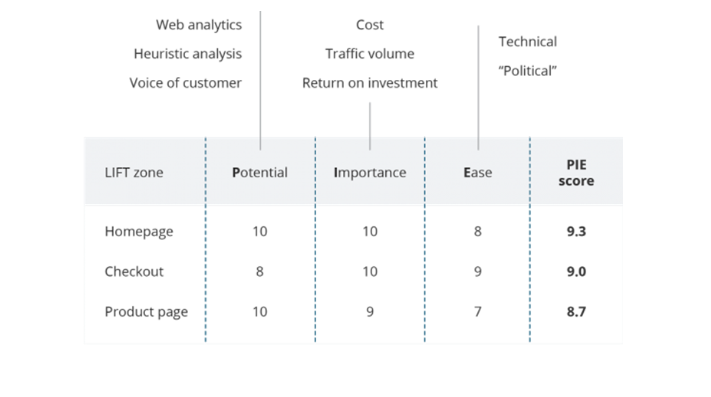
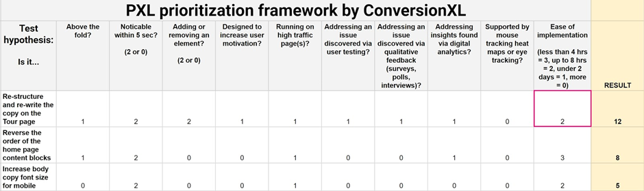

Prioritization Framework Models for A/B Tests

A/B testing becomes intensive and cumbersome when you’re overwhelmed with a lot of ideas or hypothesis to test. You tend to test one hypothesis at a time so that you’re aware of what specific change governed a lot of difference in the conversions. Hence It can’t be tested everything at once and so the priority is always to test the highest potential first. But how do you identify such idea – is the moot question. That’s when you need a right prioritization model that takes into account the right attributes and rate them more objectively, to prioritize good A/B ideas over the others.
There are a few popular prioritization frameworks in this conversion optimization space like PIE & ICE frameworks:
PIE framework
Potential:– To what extent this webpage has potential to bring major improvements.
Importance:– How important this page is in terms of traffic it brings, or in alignment with business goals.
Ease:– How easy or complicated it is to test the implemented changes.
The idea is to rate each of these parameters depending on the page we are talking about and come up with the final score by taking an average of all 3.

ICE framework
Impact:– What Impact can your page create if these modifications work?
Confidence:– How much confidence you have in these changes?
Ease:– With what ease can the changes be implemented?
For e.g.: The idea you want to explore is by adding a badge on the product which is right below the fold. The final ICE score would be computed by taking an average of all 3.
If you see, there’s a lot of subjectivity involved here, in assigning any score to each of these parameters. Hence the final score we derive is based on the lot of gut feeling. It’s highly likely that these scores can vary and impossible to get consistent scores.
Another problem with these frameworks is the parameters (that we put a value on) are too broad & vague. There might be multiple aspects involved in putting any value to these attributes. For e.g.: What kind of impact are we quantifying here – is it on maximum alignment with the business goals or mere generating more traffic without any desired CTA. Also, had we known the impact well, we wouldn’t need these prioritization techniques to test these hypotheses. Secondly, if we rate from 1 to 10, on what basis do you objectively rate from these numbers – How 8 is different from 9?
That’s where we have this interesting framework which makes a binary decision eliminating a lot of subjectivity & guesswork. Moreover, it is based on the specific conversion variables and there is a specific criterion defined for them to have a right value assigned for these variables. Please check-out this image below on PXL prioritization framework.

This framework is fully data-driven, and the rating is more objective, completely based on the specific conversion variables. It has all the major benefits as compared to earlier 2 mentioned frameworks & it completely erodes the subjectivity & guesswork issues we had in them.
Moreover, this PXL prioritization framework can be customizable, and the variables can be customized based on what matters most for the businesses. For e.g.: if businesses value brand alignment a lot, one variable can be introduced something like “Is it aligning with the brand”. Or if the business wants to target a specific audience, then the variable can specifically mention about it.
In this ever-evolving business environment, there can be umpteen ways to woo the customers by bringing out the right changes in your webpages. Hence conducting A/B tests for right & prioritized webpages is imperative. PXL prioritization framework not only brings out a lot of clarity prioritizing your test hypothesis but also erodes as much subjectivity as possible while bringing customization.
Thanks for reading . Please feel free to share your comments and feedback.